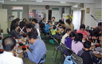
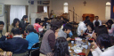
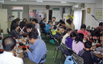
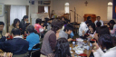

| 日本同盟基督教団 上大岡聖書教会 Kamiooka Bible Church |
|
上大岡聖書教会の１年間を紹介します。 |
| １月 | 新年礼拝 |
| ２月 | 寿町炊き出し ホームレス支援 |
|
| ３月 （４月） |
イースター（復活節）ファミリー礼拝 墓前礼拝 教会員関係者の墓前で記念礼拝を行います。 |
|
| ４月 | 教会学校進級式 （近所の桜がきれいな季節です。） |
|
| ５月 | 母の日ファミリー礼拝 （お母様方を招待し一緒に礼拝します。） |
|
| ５月 ６月 |
ペンテコステ礼拝 花の日訪問 |
|
| ７月 |
| ８月 | 夏期学校キャンプ アイスクリームパーティー |
|
| ９月 |
| １０月 |
| １１月 | 子供祝福式 |
|
| １２月 | クリスマス 礼拝と祝会 （救い主・イエス様のお誕生を祝います。） |
|
| 随時 |
| ||
| 婦人会 「サフラン会」 | |||
| ファミリーサパー | |||
| 教会バザー | |||
| 講演会 |
| |
| 日本同盟基督教団 上大岡聖書教会 牧師：鈴木大輝 〒234-0052 横浜市港南区笹下 7-13-2 ℡ 045-845-4536 |
 


